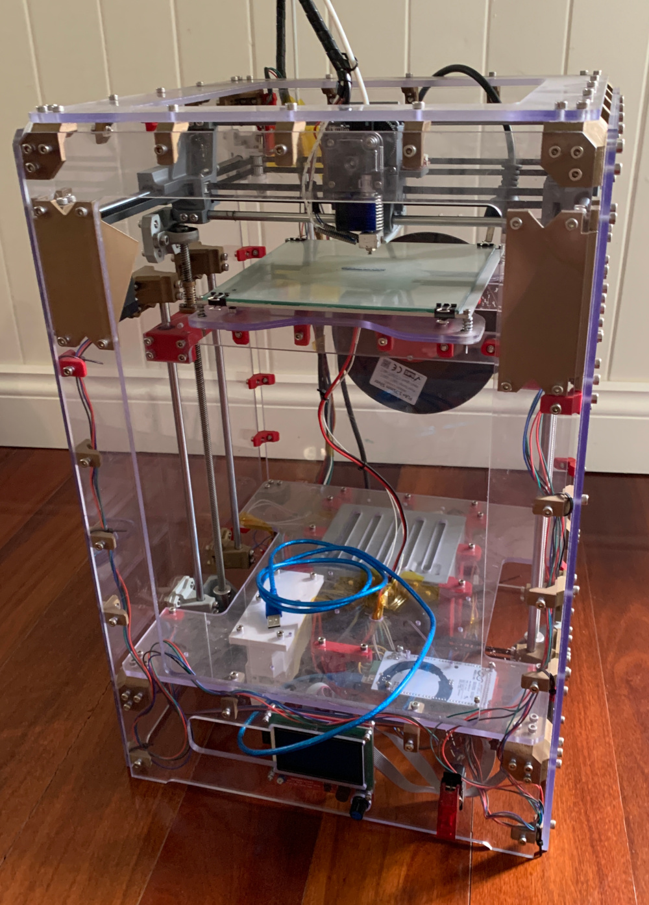

This poject was a personal undertaking to build the absolute cheapest desktop 3D printer while still maintaining some features that would be considered preferable in machines of higher quality. Such features include a heated bed, direct drive extrusion and Core XY kinematics
Construction materials are mostly salvaged such as the spare polycarbonate sheeting for the printer panels that was processed down on a CNC router and the various bracketry specifically designed small and modular that was printed out of leftover filament from an industrial 3D printer that was too small in length to be used for anything else and would have otherwise ended up as scrap.
Stepper motors and most mechanicals and bearings were salvaged. The power supply is from a discarded PC Tower and the only specific purchases for this project were that of the off the Shelf extruder assembly, some belts bearings, and the screen and main board.
The entire CAD model was created from scratch in solidworks with components modelled into the assembly as they were found or decided upon. Firmware was customised from Marlin via Arduino IDE.
In order to interact with the below model, left-click and drag or drag with finger to dolly, right-click and drag or two finger drag to pan and middle mouse button roll or pinch to zoom. The model may take a minute or two to load.